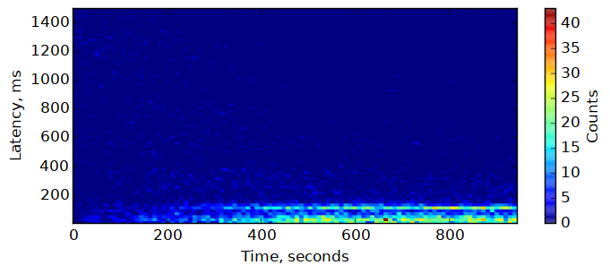
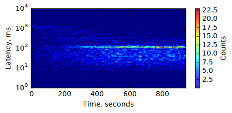
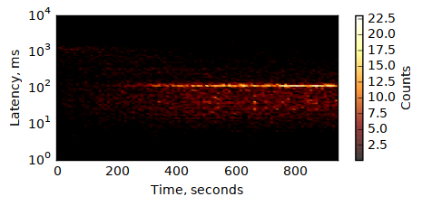
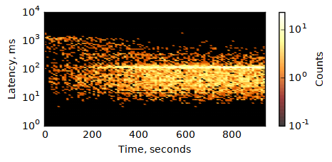
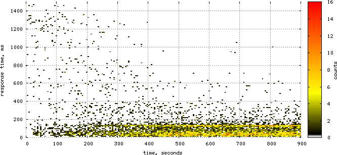

Heatmaps for all!
Heatmaps are awesome: in many cases, using color to represent an extra dimension allows to get good insights on what’s really happening. But how to draw them? Below, I’ll take a quick look onto a couple of ways.
The Experiment
Currently, I work on a Solr-based search service for one of the US e-retailers, and of course I’m interested in its performance. I can easiliy gather the response times from the service – from various testbeds, or production – in form of the application logs, where a relevant message may look like this:
2017-01-01 13:42:33,559 INFO [..skip..] - Client request: /search?keyword=denim%20shirt, response time: 57 ms, found=73, stage=1
Let’s extract the repsonse times and build some heatmaps! For the experiment, I’m taking response times for the few minutes after the application startup, with all the cache warming disabled. This way, we’ll be able to see how response time changes as JVM and Solr caches are warming.
trace2heatmap.pl
Brendan Gregg once created a very simpe, easy to use perl script to build heat maps from traces gathered with various tools, most notably perf, and made it available on github.
While this tool is usually associated with some hardcore data
sources like perf or iosnoop, it’s in fact quite generic.
The input format is simple: just two space-separated numbers per
line, the timestamp and the latency (or whatever you want to map):
$ tail -n 5 ~/tmp/responses.dat
1483264686092 108
1483264686142 48
1483264686182 38
1483264686203 18
1483264686798 592
To parse the dates from logs and convert them to unix time, I had to
write some ugly python code I won’t dare to show here. In just a couple of
minutes of coding, and dozen more minutes for playing with
trace2heatmap.pl parameters, I came up with the following command:
$ trace2heatmap.pl --grid --unitstime ms --unitslatency ms \
--stepsec 5 --rows 100 --maxlat 1500 --boxsize 4 \
--title 'Search response time -- warmup' \
~/tmp/responses.dat > heatmap-warmup.svg
It procuced the following SVG:
The cool feature of this heatmap is that it is interactive even in browser: it shows some metadata for the cell under the mouse pointer in the status line below the map. For that, the SVG should be included not as image, but as object:
<object data="heatmap-warmup.svg" type="image/svg+xml"></object>
numpy + matplotlib
matplotlib is a python 2D plotting library known in the scientific community.
Creating heatmap with it is totally googleable, but the simplest option
— plt.hist2d(...) — did not work for me: it displayed the picture
flipped upside down. So, I had to come up with a bit more elaborate script:
import numpy as np
import matplotlib.pyplot as plt
# read the data
x, y = np.loadtxt('responses.dat', unpack=True)
# change absolute timestamps to relative to start, and convert to seconds:
x = (x - x[0]) / 1000.0
# group the data points
H, xedges, yedges = np.histogram2d(x, y, bins=100)
# draw the histogram
plt.figure(figsize=(8, 3), dpi=600) # figsize -- in inches
plt.pcolormesh(xedges, yedges, H.T, edgecolors='face')
plt.axis((xedges[0], xedges[-1], yedges[0], 1500))
# set the axis labels
plt.xlabel('Time, s')
plt.ylabel('Latency, ms')
# add the colobar
cbar = plt.colorbar()
cbar.ax.set_ylabel('Counts')
# save the image
plt.savefig('plt-heatmap.png', bbox_inches='tight')
And, here is the result:

Maybe it’s not very impressive but, with certain dedication, time and
help of google (or stackoverflow) it is possible to create really nice
and professionally-looking images. matplotlib is very flexible. For
example, it’s easy to switch to logarithmic scale for the latency:

You can change the colors – define your own palette, or use one of the predefined:

Color scale can be logarithmic, too:

The script used to create the last image is here.
You can even combine the heatmap with other visualizations (e.g. add a graph of the average latency on top of the heatmap). Maybe, I did not try.
There are downsides, too. For one, matplotlib + numpy are rather
big from dependencies perspective, compared to simple perl script.
Also, the interactive UI is rather slow, and making it to show enough
data for the point under cursor is somewhat tricky.
In fact, everything is kind of tricky. There are just so may knobs and buttons…
gnuplot
A few years ago I was using gnuplot every day: no other plotting tool
could handle a few thousand data points with that ease and speed.
Since that days I try to use it whenever I have some data to
visualize and some time to get the good results.
For heatmaps, gnuplot will not prepare the data for you: you need to
define your buckets and transform individual events into the matrix
summary yourself. There are couple of possible formats, shown in
gnuplot heatmaps demo. I choose the form x y count, with
a newline when x changes:
2 10 0
2 20 0
2 31 0
[...]
2 2026 0
2 2037 0
2 2047 1
7 10 0
7 20 0
7 31 0
[...]
Grouping the data this way with a few simple loops is not that
hard, but I’ve already used numpy, so I used it to make the code
even simpler:
import numpy as np
def tick(array, idx):
# put tick in the middle of the bucket
return (array[idx] + array[idx + 1]) / 2
def transform(src_file, dst_file, xbins, ybins):
# read the data
x, y = np.loadtxt(src_file, unpack=True)
# change absolute timestamps to relative to start, and convert to seconds:
x = (x - x[0]) / 1000.0
# build the histogram
H, xedges, yedges = np.histogram2d(x, y, bins=(xbins, ybins))
# write it
with open(dst_file, 'w') as f:
for i in xrange(xbins):
for j in xrange(ybins):
f.write('%.0f %.0f %.0f\n' %
(tick(xedges, i), tick(yedges, j), H[i, j]))
f.write('\n')
transform('responses.dat', 'hist2d.dat', 200, 200)
Now, it’s possible to plot the data with one simple gnuplot command:
plot 'hist2d.dat' with image
This will show the interactive window. To save the output to PNG and make it look a bit nicer, we need a few more commands:
set term png size 700,320 crop
set output 'gnuplot-heatmap.png'
set xrange [0:900]
set xlabel 'time, seconds'
set yrange [0:1500]
set ylabel 'response time, ms'
set palette defined (0 "white", 1 "black", 13 "yellow", 40 "red")
set cblabel 'counts'
set grid front linetype 0 # 0 means dashed
unset border
plot 'hist2d.dat' with image notitle
Just save this to file and run gnuplot -p heatmap.gnuplot. Here’s the image:

Gnuplot has pretty much the same amount of flexibility
matplotlib has, and it feels more solid. It’s also much faster
— with 100x100 map it’s very noticeable, and gnuplot can
easily deal with much larger grids, like 2000x2000.
On other side, there is an additional step of preparing the data,
which makes the whole process more cumbersome. Also, while I find
gnuplot easy to use when you’ve learned it, it always takes a lot of
time to go through the docs and examples and get things going.
Here are couple of gnuplot-related links, for future reading:
- Official site – http://gnuplot.sourceforge.net/
- http://www.gnuplotting.org/
- Gnuplot tips — not so Frequently Asked Questions
- gnuplot Examples from Neil Carter
Concluding remarks
I’ve not covered many other options, most notably R, which seems
to become the tool for data manipulation and analysis, and has
excellent visualization options; but I don’t feel like diving there now.
As for the tools covered, trace2heatmap.pl is very good for the initial
analysis. If a more beautiful picture is needed, I’d use gnuplot;
I hope to find some time and make my data transformation code and
the plotting script more reusable.